CS224W：图机器学习7¶
本页统计信息
-
本页约 2853 个字, 预计阅读时间 10 分钟。
-
本页总阅读量次
频繁子图挖掘Frequent Subgraph Mining¶
这一节内容主要介绍使用传统方法和GNN来进行频繁子图挖掘的内容。这就涉及到子图的概念，子图是一个图结构中的一些节点和这些节点之间的一些边构成的结构，是图的基本组成单元，并且可以表示一定的图特征，用于区分和判别不同的图结构。
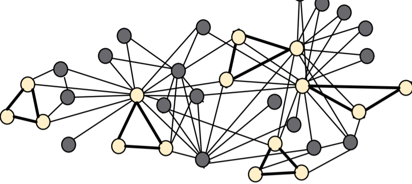
子图¶
这里介绍了两种不同的子图，一种是 Node-induced subgraph另一种是Edge-induced subgraph，区别在于 Node-induced subgraph构建的时候先取顶点的子集，然后从保留的顶点中选出一些边保留，而Edge-induced subgraph构建的时候先取边的子集然后保留其中的一些节点作为图的顶点集合。
构建子图究竟选用哪种方式还要取决于对应的领域，在化学领域的分子结构图中往往用node-induced，因为化学中存在各种各样的官能团，而在知识图谱中用的比较多的是edge-induced
图的同构¶
对于给定的两个图\(G_1=(V_1,E_1),G_2=(V_2,E_2)\)，如果存在一个定义在\(V_1\rightarrow V_2\)双射函数f满足对于\((u,v)\in E_1\rightarrow (f(u),f(v))\in E_2\)，那么就称这两个图是同构的(Isomorphism)
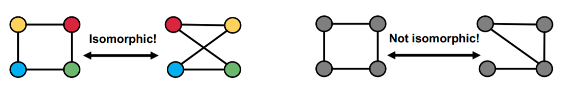
子图同构：如果图G1和图G2的子图是同构的，就称G2关于G1是子图同构的，这种情况下我们也可以说G1是G2的子图。
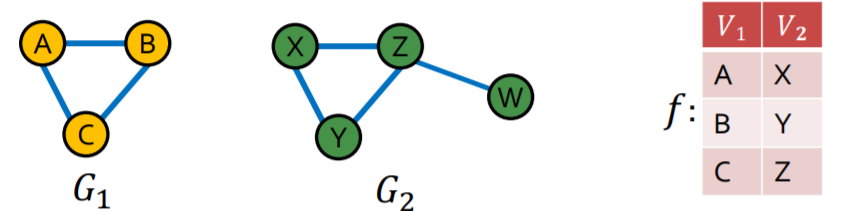
网络主题Network Motifs¶
网络主题Network Motifs是在一个图结构中的频繁出现且比较重要的模式，用子图的形式表现出来，Network Motifs可以帮助我们理解图中存在的隐含信息并据此做出相应的决策，比如。常见的Motifs有：
- Feed-forward loops前馈关系，常见于神经网络
- Parallel loops代表了一种平行的关系，常见于食物网
- Single-input modules代表了一种从属关系，常见于基因关系控制网络
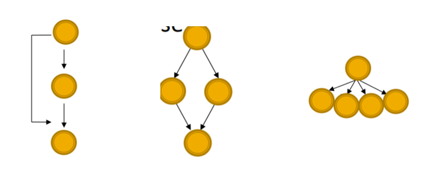
子图的频率¶
对于一个图结构\(G_Q\)和目标图数据集\(G_T\)，节点v是\(G_Q\)中的一个点，则节点v的子图频率并定义为：
- u是\(G_T\)中的一个节点，\(G_T\)中和\(G_Q\)同构并且将u映射到v的的所有子图中，所有节点u的个数
- \((G_Q,v)\)被定义成 node-anchored subgraph(节点固定子图)
- 如果图数据集中有多张图，就分别进行计算
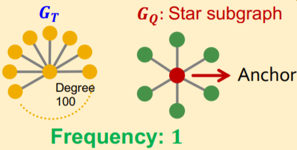
Motif的重要性¶
一般来说相比于一个随机图，在真实的图结构中出现频率越高的子图的重要性越高，我们需要用一定的规则来定义子图的重要性。

随机图¶
Erdős–Rényi (ER) random graphs是由n个节点并且两两之间用概率p连接一条边的无向图，记为\(G_{n,p}\)
Configuration Model可以生成一个每个节点的度数为指定值的图，这种模型经常被用作图的null-model，我们可以通过比较真实的图G和一个随机生成并且每个节点的度数和G相同的随机图来分析比较得出一个图的重要性。这个模型生成随机图的过程如下：
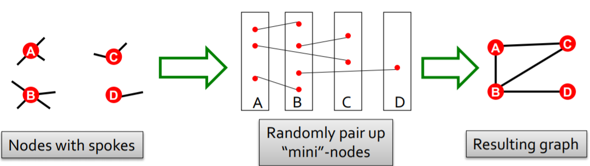
另一种方法被称为交换(Switching)，这种方法从一个给定的图开始，重复若干次交换的操作，每次选择两条边互相交换，最后生成了一个随机的关联图，这种图没有改变原本节点的度数，只随即改变了边。
重要性计算的过程¶
一般来说motif在真实的图中出现的频率会比随机图中高很多(overrepresented)，因此计算motif的重要性一般有如下几个步骤
- 计算给定的图中的motif的个数
- 生成统计信息相近的随机图并且计算随机图中的motif数量
- 使用统计学评估方法来衡量每个motif对于这张图的重要程度
Z-Score¶
对于图中的一系列motif，可以用Z-Score统计量来衡量其重要程度，对于第i个motif，用\(N_i^{real},N_i^{rand}\)分别表示在原图和随机图中发现的motif个数(随机图可以有多个)，那么其Z-Score可以用如下方式计算：
并且可以对一系列的Z-Score进行标准化，得到网络重要性指标significance profile(SP)
- SP可以用来衡量不同的motif之间的相对重要程度
GNN与子图匹配¶
- 子图匹配是一个很经典的图问题，需要判断一个给定的图是不是另一个图的子图，这一节的内容就是要用GNN来解决子图判别问题。一个很直观的想法是，我们可以通过比较嵌入空间的几何形状来提取子图同构的性质。
- 然而一个令我不解的问题是，子图判断应该是一个确定性问题，为什么可以使用GNN来解决
节点锚定¶
我们考虑将问题转化成一个二分类问题，即用True和False来判断一个图是否同构于另一个图的子图，我们可以考虑使用一种节点锚定(node-anchored)的方法：
- 我们可以用GNN去计算两个图中对应节点u和v的嵌入向量
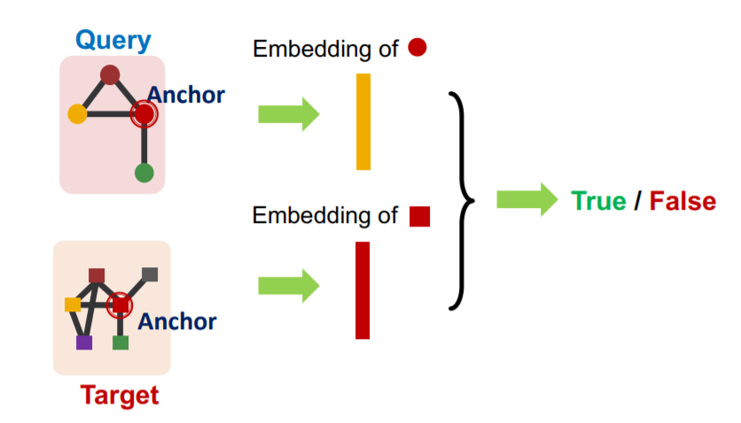
- 然后来判断u的邻居节点和v的邻居节点是不是同构的
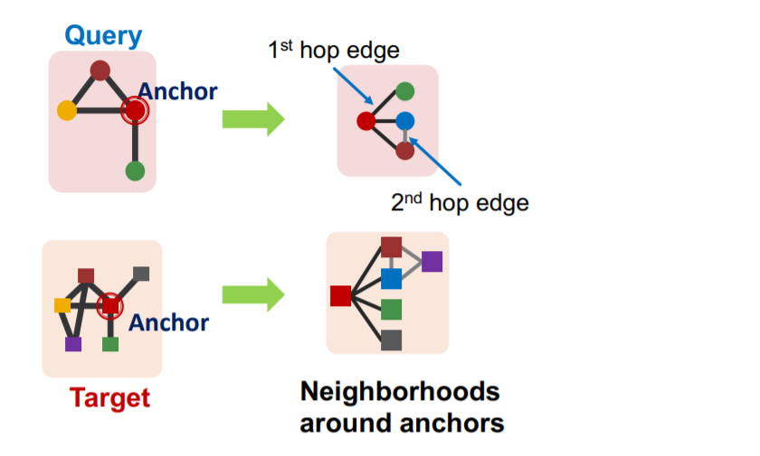
这种方法不仅可以判断是不是子图，还可以同时标定一组对应的点。为了实现这种方法，我们需要通过如下步骤：
- 假设我们需要在图\(G_T\)中匹配一个子图\(G_Q\)
- 对于图中的每一个节点，计算出它的K-Hop邻居(使用BFS等手段)，这里的深度K是一个超参数，可以自己设定
- 然后使用GNN得到邻居的嵌入向量
有序嵌入空间Order Embedding Space¶
我们可以将图A映射到高维空间中的一个点，使得这个点的所有维度都是非负的，这样一来这些嵌入向量就可以比较大小，使用\(\preceq\)符号来表示不同嵌入之间的大小，一个直觉是子图往往在超图的lower-left(可以理解为广义上的“左下角”)，对于一个子图和其超图，应该有： $$ \forall_{i=1}^{D} z_{q}[i] \leq z_{u}[i] \text { iff } G_{Q} \subseteq G_{T} $$ 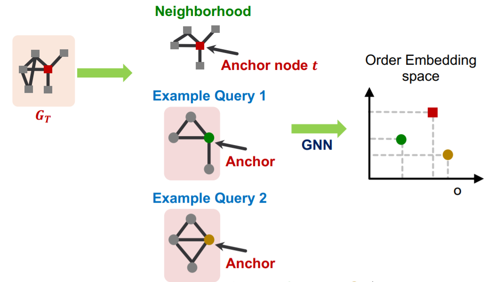
为什么可以使用有序嵌入？因为子图同构关系可以在有序嵌入空间中很好地编码，并且具有：
- 传递性，A是B的子图，B是C的子图，那么A是C的子图
- 反对称性，如果AB互为子图那么他们同构
- 闭包性，单个节点的图是所有非空图的子图，空节点是所有图的子图
这些性质都支持将一个图结构嵌入到一个有序嵌入空间中
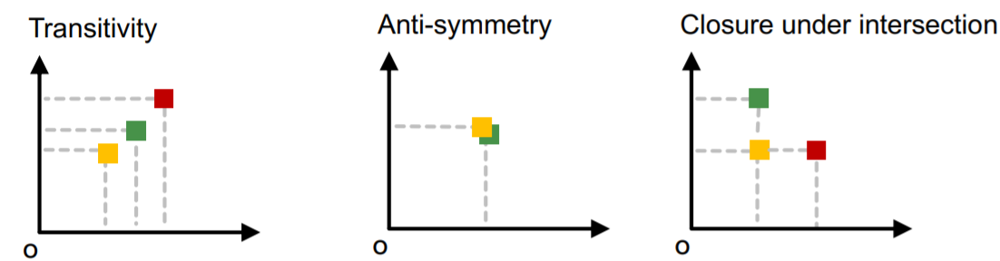
模型的构建和训练¶
我们已经说到用锚点和有序嵌入的方式来解决子图同构问题，为了构建并训练一个完整的模型，我们需要设定一个损失函数，来学习反映出子图关系的嵌入向量。
而损失函数的设定需要满足Order constraint，这种约束可以保证子图关系的信息在嵌入空间中被保留了，因此可以设置损失函数为： $$ E\left(G_{q}, G_{t}\right)=\sum_{i=1}^{D}\left(\max \left(0, z_{q}[i]-z_{t}[i]\right)\right)^{2} $$ 这个函数对于有子图关系的两个图来说就是0，否则就是一个正数。我们可以采用负采样的方式来训练模型，对于样本\((G_q,G_t)\)选取一半为有子图关系的正样本，而另一半为没有子图关系的负样本，并且使用一个max-margin损失函数，即：
- 对于正样本，最小化\(E\left(G_{q}, G_{t}\right)\)
- 对于负样本，最小化\(\max(0, \alpha-E\left(G_{q}, G_{t}\right))\)，这里的\(\alpha\)是一个自己设定的margin，我们希望负样本\((G_q,G_t)\)计算出来的惩罚函数要尽可能小，使用这种形式的损失函数可以防止模型在训练的过程中，负样本\((G_q,G_t)\)的嵌入越来越远离正确的位置
- 在训练的过程中每一步要采样一对正负样本进行训练，同时BFS的深度K可以作为超参数自己设置
频繁子图挖掘¶
- 频繁子图挖掘需要找到一个图中出现次数最多的大小为k的motif，这需要解决两个问题，一个是枚举出所有大小为k的子图，另一个是统计不同类型的motif的个数。
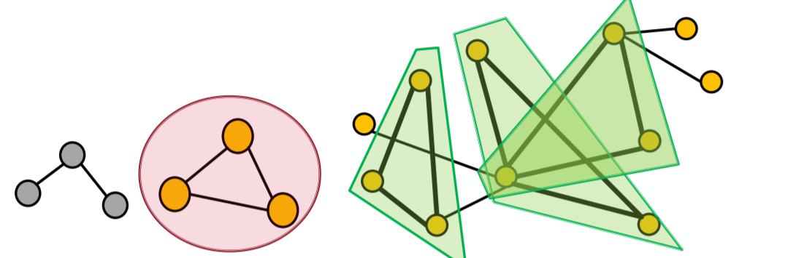
然而频繁子图挖掘也是一个很困难的问题，困难的点在于频繁子图的寻找是一个NP-hard的问题(同构子图的判定是一个NPC问题)，计算复杂度非常高，因此这一节课的内容提出了使用GNN来解决频繁子图挖掘的问题。
使用GNN进行频繁子图挖掘¶
GNN或者说表示学习的方法可以帮助我们找到频繁子图，具体的解决方案是用控制搜索空间来解决组合爆炸的问题，然后用GNN来解决同构子图匹配的问题。我们可以将问题定义为如下形式：
- 假设需要操作的图是\(G_T\)，需要挖掘的子图的大小是k，并且得到的结果为r
- 算法的目标是找到\(G_T\)中所有节点个数为k的子图并得到出现最高的频率，同时使用node-level来定义子图的概念
下面主要介绍一种频繁子图挖掘的GNN模型，其名为SPMiner
SPMiner算法¶
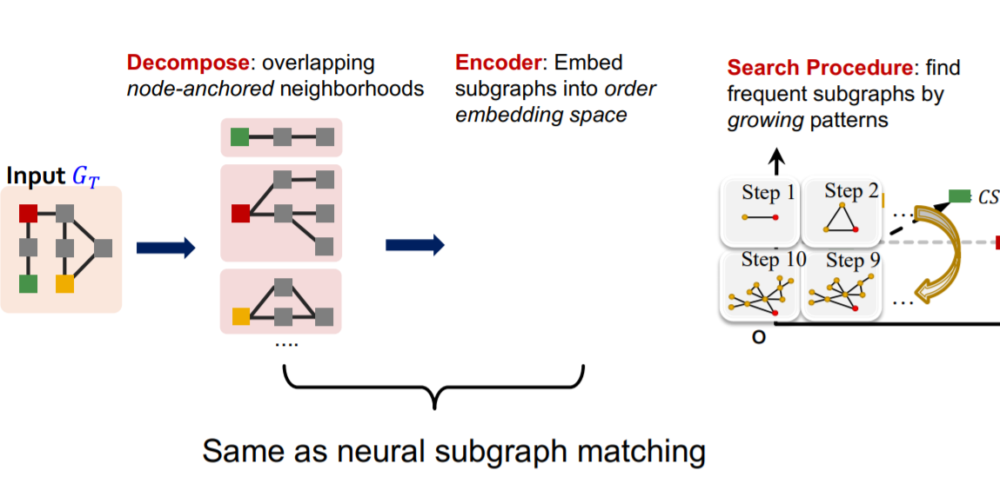
- SPMiner将输入的图\(G_T\)分解成neighbor，并计算其order embedding，使用order embedding我们可以快速找到子图出现的频率
- 可以通过计算一个order embedding“右上方”的embedding数来计算子图出现的频率，下图中红点右上方的所有点表示是\(G_Q\)的neighbor中出现过红点对应的子图
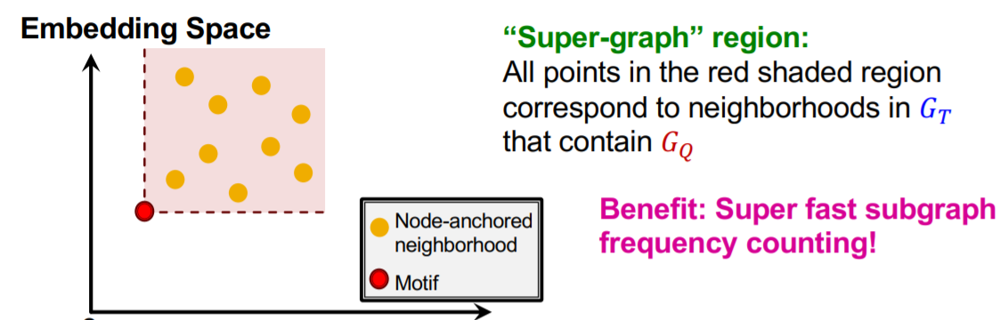
SPMiner算法的搜索过程包含如下几个步骤：
- 启动：从图中随机选择一个节点u开始搜索，定义集合\(S=\lbrace u\rbrace\)，并按照上面提出的频率估计方法来统计
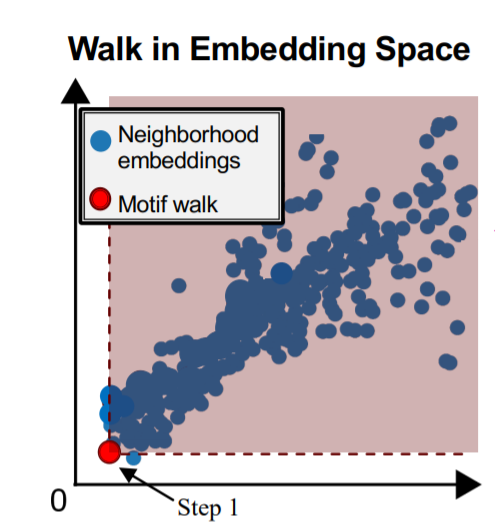 - 迭代步骤：从S的邻居中选择一个节点并将其加入S，同时重复上述搜索过程
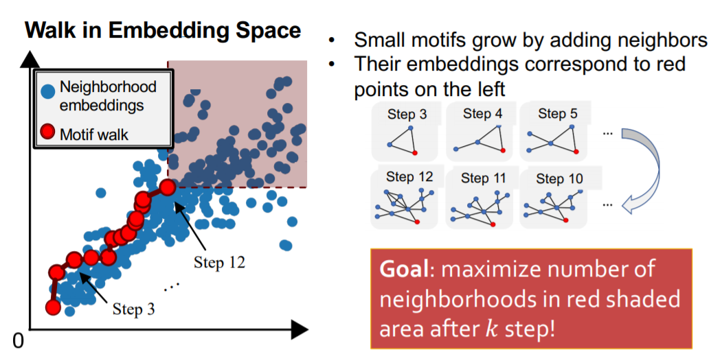
- 当集合S达到了预设的size时，记录一个子图搜索结果
这里的邻居节点选择有一定的策略，Total violation of a subgraph G指的是不包含子图G的邻居，将其最小化等价于将频率最大化，因此每一步搜索的过程中都采用贪心策略，将能带来最小化的total violation的节点加入集合S
创建日期: 2023年1月23日 18:40:25